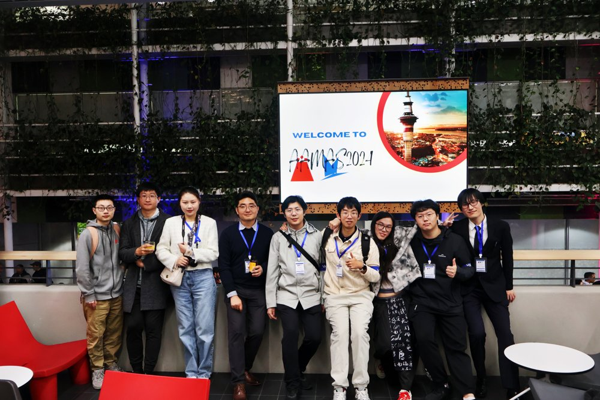

当前博士研究
我的博士课题研究 AI 心电图分析、多支冠脉缺血检测与 FFR 预测。目前探索如何将指南条件写成可检验的规则，通过控制证据变化审计模型是否依赖这些诊断依据。
奥克兰大学 · 四川大学华西医院合作研究实验室 ↗
连接模型学习到的表示、显式知识与人类判断。
我的博士课题研究 AI 心电图分析、多支冠脉缺血检测与 FFR 预测。目前探索如何将指南条件写成可检验的规则，通过控制证据变化审计模型是否依赖这些诊断依据。
我清洗数据、设计并实现融合模型，并参与了论文写作。团队使用 UK Biobank 数据开展实验，并用成都的数据做外部验证。
价值观表达、基于证据的辩论生成及 AI 同行评审的可靠性。
基于原型的人格推断与视觉叙事中的人格一致性。
连接交易网络、市场信号与在线讨论，预测行为和价格。

参与 ARR、AAMAS 和 Information Fusion审稿；AAMAS 2024 志愿者；2024 年访问电子科技大学。
已发表论文、预印本及投稿研究，附个人贡献。